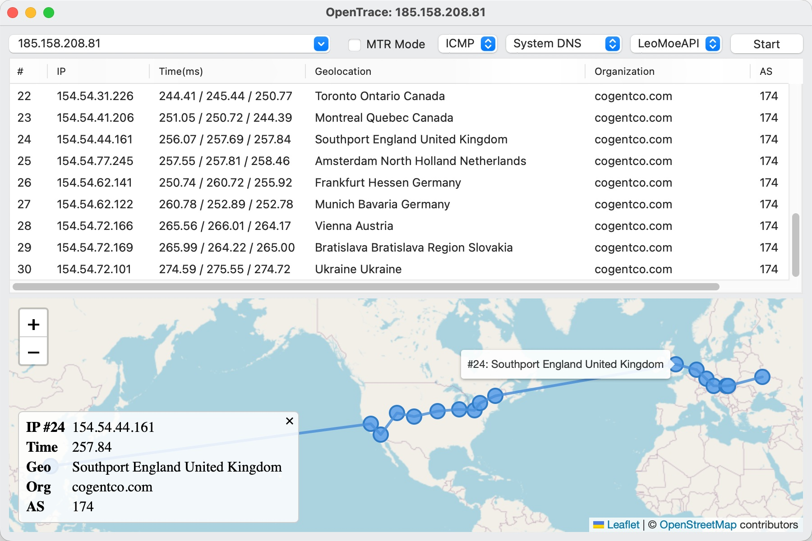
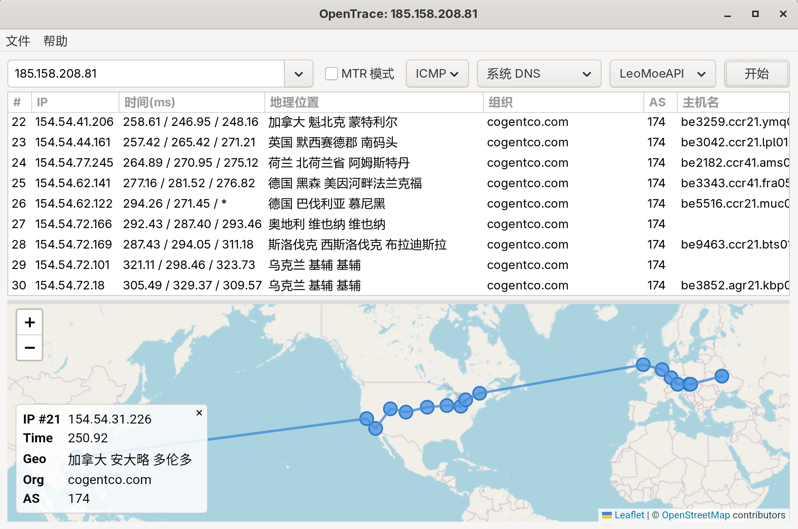
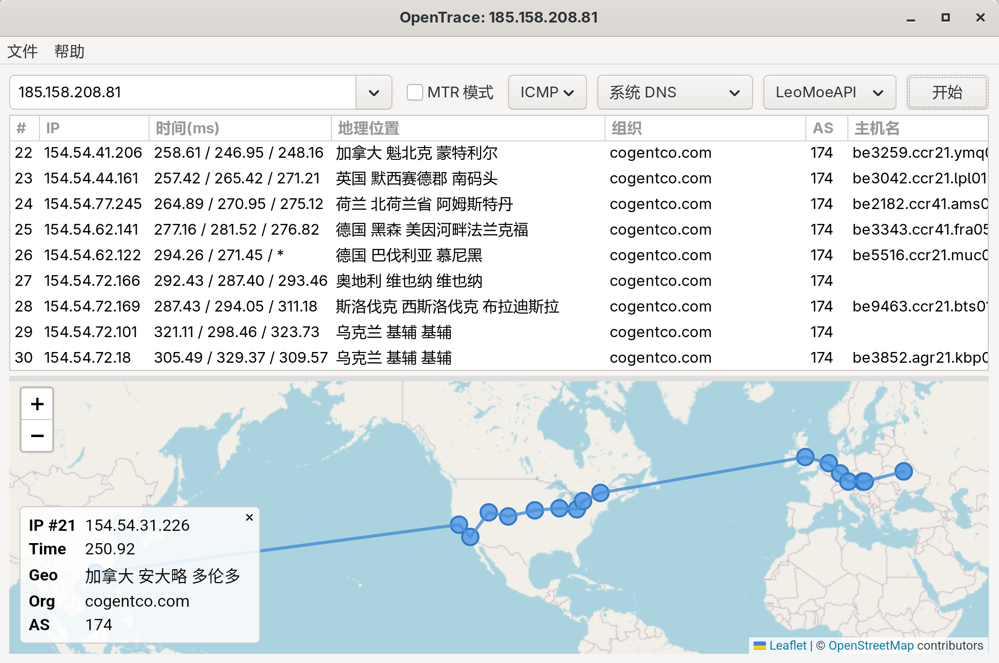
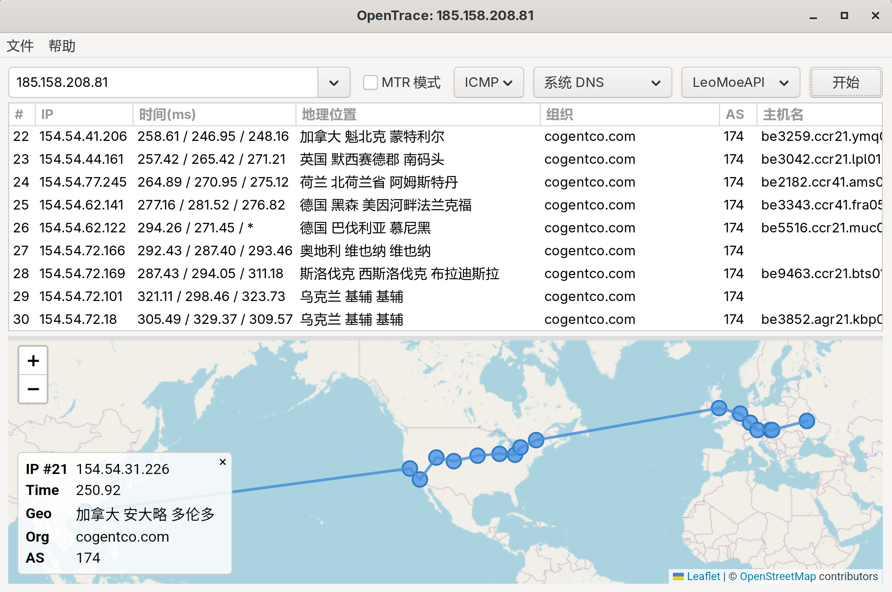

原生体验，跨越平台


基于 Windows WPF、Linux GTK 和 macOS 原生技术构建，带来流畅且一致的使用体验。
集成了强大的 My Traceroute 功能，实时分析网络路径的稳定性与丢包情况。
内置中文、英文、法语、西班牙语、日语、俄语，打破语言障碍。
支持隐私打码（隐藏前几跳 IP）、自定义 DNS (DoH)、以及加载本地 MMDB IP 数据库。完全掌控您的网络分析数据。
支持通过 CLI 参数快速启动追踪，方便脚本集成与极客使用。
 
